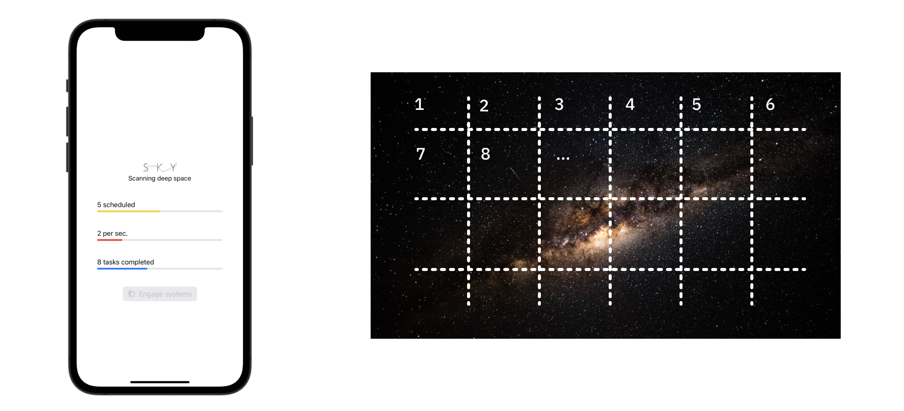

Chapter 10: Actors in a Distributed System¶
In the previous chapters, you learned how to run concurrent tasks in parallel on multiple CPU cores. Furthermore, you learned how to use actor types to make concurrency safe. In this last chapter of the book, you’ll cover the advanced topic of distributed actors: actors that run not only locally, but also in other processes — or even on different machines altogether.
At the time of this writing, Apple is:
- Gathering feedback on an experimental distributed actors language feature through a Swift Evolution process pitch (https://forums.swift.org/t/pitch-distributed-actors/51669). Once the proposal is accepted, the feature will land in a future release of Swift.
- Working on and implementing feedback for a “Swift Distributed Actors (https://swift.org/blog/distributed-actors/)” package — a cluster library for the upcoming distributed actor language feature.
Since these are currently works-in-progress, you’ll build your own custom distributed system in this chapter, to play around with the idea of using actors in a distributed environment. You’ll only use local actors for now, and you’ll write your own logic to make them cooperate across the network.
Once Apple merges the distributed actors language feature in an upcoming Swift release, we’ll update this chapter to remove the custom implementation and redesign the step-by-step instructions to use the latest and greatest syntax.
Note: The generic design of the language syntax for distributed actors is thoroughly described in the proposal linked above. In a few places in this chapter, we’ll make a parallel between your custom implementation and how the feature is likely to work when it ships.
The distributed actors model has been around for some time, and libraries offer actors and distributed actors for many languages. Therefore, this chapter includes only a minimal amount of theory that covers the model in general, since Apple hasn’t released that language feature just yet.
Without further ado — could distributed actors come to the stage, please?
Going from local to distributed¶
You’re already familiar with actors — they let you isolate state by putting an automatic barrier between the type’s synchronized internal state and access from “outside” the synchronized scope. That means that calls from other types are considered outside access and automatically made asynchronous:
Since accessing the actor’s state from outside is done asynchronously, that process may take an arbitrary amount of time. In fact, in Chapter 6, “Testing Asynchronous Code”, you had to implement a custom way to time out asynchronous calls that took longer than expected.
For local actors, the compiler transparently serializes calls that access the actor’s state:
But the compiler isn’t limited to always injecting the same logic into the isolation layer. For example, distributed actors take advantage of the isolation layer’s asynchronous nature and allow you to add a transport service there. A transport can relay calls to actor methods to another process, to another machine on the network or to a JSON API available on a web server.
Distributed actors introduce the notion of location transparency, which allows you to work with both local and distributed actors in much the same way. In fact, at the point-of-use in your app, they’re interchangeable with very few code changes. Furthermore, location transparency makes it easy to develop your actors locally and release them into a distributed environment. Or, vice versa, you can develop distributed actors and design their unit tests to run locally!
You can choose any kind of transport because the distributed actor language feature is transport agnostic! You can talk to an actor over the network, through Bluetooth connectivity or via custom JSON API of your choice.
For example, in a shopping app, you could call a userOrders() actor method to get a user’s orders. A transport service forwards your call to the server, where an actor counterpart executes usersOrders() and reads the orders from the server database:
The diagram above shows an example of working with a local database actor that transparently forwards database queries to a server on the web. Your UI layer, MyView, doesn’t know if the database actor is local or distributed — it doesn’t make a difference at the point of use.
If that looks a little bit like magic, don’t fret; distributed actors function by strict rules that make it all possible.
Distributed actors have the following traits:
- They allow no direct access to data from outside the actor. The model encourages async method calls, which are easy to relay over the transport layer.
- Distributed actors are addressable. Depending on the type of transport, a distributed actor’s address may be a REST endpoint, a local process ID, a file path or something else that uniquely identifies it.
- The input and output of actor methods are automatically serialized for transport.
Once the distributed actors language feature ships, most of the traits above will be built in, letting you focus exclusively on designing your business logic. Until then, if you want to create your own distributed systems, you’ll need to write a little more code — as you’ll do in this chapter.
Getting started with SkyNet¶
Once more, you’ll work on the Sky project from Chapter 7, “Concurrent Code With TaskGroup”. You’ll improve it by adding an actor system that connects to local network devices over Bonjour. This will let you perform more concurrent scans by using system resources across the network.
This chapter is fairly long. It features a lot of small steps that guide you through all parts of the project, like user interface, networking and concurrency. Should you feel a little fatigue coming over you, there’s no shame in taking a break when you need it.
The ultimate goal for this guided exercise is to scale the computing power of the app by connecting more and more devices to a meshed Sky network. Thus, this chapter’s project is called SkyNet.
Before you can add new features, you’ll need to enable some useful code that’s been hiding in the starter project.
Enabling the network layer¶
At the end of Chapter 7, “Concurrent Code With TaskGroup”, you left the Sky project — an app that scans satellite images for alien life signs — in good shape. The user can start a scan by tapping Engage systems, and the app will concurrently iterate over sectors in satellite imagery and scan them.

Open the starter project for this chapter — or, if you worked through Chapter 7, “Concurrent Code With TaskGroup” completely, you can continue working with your earlier project.
SkyNet will use Bonjour to discover other iOS devices running the app and talk to them. Bonjour (https://apple.co/2Xiax0Y) is a standard that Apple created to help your network discover devices and services.
For example, Bonjour lets you automatically find all the printers on the office Wi-Fi, letting you choose which one to use to print your resume. Which you’ll need to do, now that you’ve updated it with all your new concurrency knowledge!
Even basic networking requires a lot of boilerplate. To save some time and help you focus on this chapter’s main topic, the starter project already includes the bare bones of a functioning transport service over Bonjour.
Open ScanTransport.swift from the Transport folder and uncomment all the code that’s commented. You’ll find the opening comment syntax /* just below the copyright message and module imports at the top of the file and the closing */ at the very bottom. Remove them both.
You’ll get two compiler errors, but don’t worry — you’ll fix those next.
In summary, ScanTransport creates a Bonjour network session, starts an advertiser service that tells other devices about the current system and starts a browser that finds other systems on the network:
The bundled code connects all the SkyNet devices to one other and uses NotificationCenter to broadcast connection updates within your app.
You’ll work on ScanTransport a little later, once you’re ready to talk to other devices. For now, you need to create the missing ScanSystem type that the compiler is complaining about.
Creating an actor system¶
In this section, you’ll add an actor system to the project — a system that controls how scan tasks execute on a single machine. The app model will execute tasks via the local system. By the end of the chapter, it will detect other devices on the network and use their systems, too.
You’ll start by creating a scanning system that will manage running tasks locally and remotely. Add a new file to the Tasks folder and call it ScanSystem.swift. Then, add the following actor code inside it:
import Foundation
actor ScanSystem {
let name: String
let service: ScanTransport?
init(name: String, service: ScanTransport? = nil) {
self.name = name
self.service = service
}
}
ScanSystem is a simple actor that you initialize with a name and a service. The service will transport the data over the network. In other words, that’s the type that will relay tasks to remote systems.
The systems in SkyNet each need a unique address so they can send task requests to one another. You’ll use each device’s vendor identifier to anonymously identify the device on your local network.
Next, insert this code inside ScanSystem:
private(set) var count = 0
func commit() {
count += 1
}
func run(_ task: ScanTask) async throws -> String {
defer { count -= 1 }
return try await task.run()
}
Here, you add:
- A thread-safe
countproperty to track the current system’s pending tasks. commit(), which increases the task counter. The system commits to performing the scan — that is, it’s already accounting for the task — but waits for you to start the actual work by callingrun(_:). This design gives you a little more flexibility when distributing the work across systems.run(_:), which runs the given task and decreases thecountcounter. The counter is safe to update even in concurrent calls becauseScanSystemis an actor.
You’ll work more on this actor later in the chapter. For now, leave it as it is and move on to updating the app model.
Connecting to remote systems¶
To stay in touch with other systems on the network, you’ll need to keep a list of their addresses. ScanTransport already takes care of connecting all the nodes, but it’s up to you to do the “talking” between them.
To manage the list of connected SkyNet devices, you’ll add one more actor. Add a new Swift file to the Tasks folder and name it Systems.swift.
Next, add the skeleton for the new type:
import Foundation
actor Systems {
private(set) var systems: [ScanSystem]
init(_ localSystem: ScanSystem) {
systems = [localSystem]
}
}
The new actor will manage a list of ScanSystems, one for each device connected to SkyNet.
The actor always starts with a single system on its list: the local one. To make it easily accessible, add a new computed property:
var localSystem: ScanSystem { systems[0] }
Next, you need a safe way to add and remove systems. Add these two convenience methods to do that:
func addSystem(name: String, service: ScanTransport) {
removeSystem(name: name)
let newSystem = ScanSystem(name: name, service: service)
systems.append(newSystem)
}
func removeSystem(name: String) {
systems.removeAll { $0.name == name }
}
Here’s a breakdown of the code above:
- addSystem(name:service:): Adds a new system. It also removes duplicate systems with the same name, if such systems exist.
- removeSystem(name:): Removes any systems with the given name from the list.
Now that you’ve more or less completed the Systems type, you’ll continue working in the app model. There, you’ll watch out for connectivity messages and keep track of your connected SkyNet peers.
Monitoring your systems’ connectivity¶
Open ScanModel.swift and add these new properties:
@MainActor @Published var isConnected = false
private var systems: Systems
private(set) var service: ScanTransport
You have some big plans for those properties, namely:
- You’ll update
isConnectedevery time a system joins or leaves SkyNet, so you can update the app UI accordingly. systemsis your systems actor. It manages the list of connected devices.- You’ll store the transport service in
serviceand inject it into any remote systems, so they can use it to talk to other devices.
Each device will keep a list of all addresses so it can send requests to any of them.
To resolve the errors regarding uninitialized properties, add these lines to the model’s init(total:localName:) initializer:
let localSystem = ScanSystem(name: localName)
systems = Systems(localSystem)
service = ScanTransport(localSystem: localSystem)
service.taskModel = self
Here, you create a new system with the local device name and initialize your system’s actor and the network transport.
Open ScanTransport.swift and scroll to session(_:peer:didChange). This is an MCSessionDelegate that the Multipeer Connectivity session, MCSession, calls whenever a peer’s connectivity changes.
ScanTransport is mostly interested in devices connecting or disconnecting; the code inside the method reacts only to connected and disconnected events and republishes those via NotificationCenter.
It also attaches the concrete peer device identifier to each notification. This is the identifier you’ll use as the address of the respective remote system.
With that information in mind, switch back to ScanModel.swift and implement the system connectivity handler. Add this empty method to get started:
func systemConnectivityHandler() {
Task {
}
Task {
}
}
You’ll use two asynchronous tasks to listen for the two notifications.
Start by adding this code inside the first Task closure:
for await notification in
NotificationCenter.default.notifications(named: .connected) {
guard let name = notification.object as? String else { continue }
print("[Notification] Connected: \(name)")
await systems.addSystem(name: name, service: self.service)
Task { @MainActor in
isConnected = await systems.systems.count > 1
}
}
As in previous chapters, you asynchronously iterate over the notifications with a given name — in this case, connected. Each time you get a notification, you add a remote system with the connected peer identifier, too.
You need to update isConnected on the main actor; usually, you’d use MainActor.run(...) to do that. This time, however, you need to use await to access systems.count asynchronously — but MainActor.run(...) expects a synchronous closure.
So, instead of calling MainActor, you create a new Task and annotate the closure argument with @MainActor. This allows you to comfortably both use await in a concurrent context and run the code on the main actor.
Next, add this code inside the second task closure:
for await notification in
NotificationCenter.default.notifications(named: .disconnected) {
guard let name = notification.object as? String else { return }
print("[Notification] Disconnected: \(name)")
await systems.removeSystem(name: name)
Task { @MainActor in
isConnected = await systems.systems.count > 1
}
}
This task is similar to the previous one. Here, you remove a system by its name if the peer has disconnected.
All that’s left is to call the new method. To do that, append this line to init(total:localName:):
systemConnectivityHandler()
You’ve now finished handling the systems in your model, from creating a local system and starting the discovery service to updating the list of connected peers.
Next, to make connecting a little more fun, you’ll add an indicator to notify the user when their device is connected to SkyNet.
Adding a connectivity indicator¶
Open SkyApp.swift and, just below the alert view modifier, insert:
.toolbar {
if scanModel.isConnected {
Image(systemName: "link.circle")
}
}
With this code, whenever your model connects to one or more remote systems and updates isConnected, you’ll show or hide the connection icon in the toolbar, too.
You’ve done a great job powering through this long list of steps. Now, it’s finally time to try the new stuff!
Build and run.
There’s a good chance that the first thing you’ll notice is a macOS system alert that asks you if Sky.app is allowed to talk to other devices over the local network:
If you see this dialog, click Allow to give SkyNet access to the network; that will take you to the app’s main screen:
Note: If you’re running on a device, you might see the alert on your device instead.
You don’t see much difference from how the app looked at the end of Chapter 7, “Concurrent Code With TaskGroup”, do you?
Of course not — at this point, SkyNet is only running on a single device. This is not SkyNet — it’s just the Sky project. Tap the Engage systems button; you’ll see that the app works just as it did before.
Luckily, Xcode allows you to start multiple iOS simulators at the same time! While you’re running the project, select a different simulator from the device list next to the scheme selector:
Once you start the app on a second or a third simulator, Xcode will stop the app on the previously running simulator. You’ll need to manually restart SkyNet on the simulator(s) where the app has been stopped so you can have a few copies of the app working together.
Note: If you have an older Mac, it might not be happy running multiple simulators at the same time, and it might not be able to devote multiple cores to multiple simulators. In that case, you’ll need to run at least one copy of the app on a device to see the best results.
As soon as you launch the project on your additional device, you’ll see the connectivity icon appear in the top-right corner:
Note that the connectivity framework is quite verbose. The output console fills up quickly with messages along the lines of:
[MCNearbyDiscoveryPeerConnection] Read failed.
[MCNearbyDiscoveryPeerConnection] Stream error occurred: Code=54 "Connection reset by peer"
[Notification] Connected: iPhone 12
[GCKSession] Failed to send a DTLS packet with 117 bytes; sendmsg error: No route to host (65).
[GCKSession] Something is terribly wrong; no clist for remoteID [1104778395] channelID [-1].
...
For the most part, you can ignore these messages. They make looking for your own logs a little difficult, but the connectivity framework usually quiets down after a few moments.
Congratulations, you’re halfway there! Your actors are all on stage; now you have to give them some lines and direction. Your next task is to make those remote systems listen to your commands and jump hoops when you tell them to.
Sending a task to a remote system¶
Next, you want to send a ScanTask over the network for remote execution. To do this, you need to make it Codable. Open ScanTask.swift and add a Codable conformance to that type:
struct ScanTask: Identifiable, Codable {
Now, open ScanTransport.swift and add this new method to ScanTransport:
func send(
task: ScanTask,
to recipient: String
) async throws -> String {
guard let targetPeer = session.connectedPeers.first(
where: { $0.displayName == recipient }) else {
throw "Peer '\(recipient)' not connected anymore."
}
let payload = try JSONEncoder().encode(task)
try session.send(payload, toPeers: [targetPeer], with: .reliable)
}
Right off the bat, you’ll notice a new compiler error, complaining that you haven’t returned a value. Don’t worry about it; you’ll fix it momentarily.
The method accepts a task and a remote system name to talk to. First, you verify that the current system list contains the given identifier. In a real-life situation, the given system could have disconnected moments earlier, so you need to double-check.
Then, you send the encoded JSON payload by calling MCSession.send(...). You’ve already found the peer ID, so you ask the session to send the task payload to only that particular device.
Unfortunately, MCSession is not a modern type that offers async variants of their APIs. Since you can’t comfortably await the remote peer response, you’ll have to code that logic yourself.
Managing a network request lifetime¶
There are three possible outcomes of sending a network request to another SkyNet system:
ScanTransportreceives a response from the remote peer with the task result. You’ll add some code later to broadcast aresponsenotification with the response payload.- No response comes back within a given amount of time. You’ll consider the peer unresponsive and abort the remote task execution.
- The remote peer disconnects while you’re waiting for a response from it. In that case, you’ll also fail the remote task execution.
In a real app, there could be even more reasons for the remote task to fail, but you’ll also have more time to develop and test the project. For this chapter, you’ll implement the three options above.
You’ll take care of the request timeout first of all. To do so, you’ll use an old friend: TimeoutTask, which you used in Chapter 6, “Testing Asynchronous Code”. Your current project includes TimeoutTask in the same state as at the end of that chapter.
Open TimeoutTask.swift in the Utility project folder. With your new knowledge about state isolation in Swift, it’s fairly obvious that the code in TimeoutTask is crash-prone. If your code uses or updates continuation concurrently, it might crash your app. You noted that shortcoming of TimeoutTask when you first wrote the code; now, you’ll finally resolve that issue.
In this chapter, you’ll use the fact that actors serialize access to their state to easily prevent app crashes in SkyNet. Replace the class keyword near the top of the file with actor, like so:
actor TimeoutTask<Success> {
This simple change makes sure you won’t cause any crashes that will bring down SkyNet because the actor type serializes the access to continuation as an instance property.
To use your newly minted actor, switch back to ScanTransport.swift. Find send(task:to:) and append the following at the bottom of it:
let networkRequest = TimeoutTask(seconds: 5) { () -> String in
}
Here, you create a new task that will time out if it doesn’t get a response from the remote peer within five seconds. TimeoutTask’s result is the string that you expect the remote peer to return after completing the scan.
The code you’ll add in the next section will accept peer responses and relay them to your model via notifications. Then, you’ll wait for a response notification and return the remote result of the TimeoutTask.
Receiving a response from a remote system¶
At this point, you need to add a new type that can transport the result of a scan back to the original system. You need a simple type to wrap the string that Task.run() returns.
Note: The data you transport over the network isn’t limited to a specific type. For simplicity’s sake, you use a String here because encoding data for transport will become automatic anyway, once Apple merges its distributed actors support to Swift.
Open ScanTask.swift and add the following response type at the bottom of that file:
struct TaskResponse: Codable {
let result: String
let id: UUID
}
Now, switch back to ScanTransport.swift and return to send(task:to:). Inside TimeoutTask’s closure, insert this code to handle response notifications:
for await notification in
NotificationCenter.default.notifications(named: .response) {
guard let response = notification.object as? TaskResponse,
response.id == task.id else { continue }
return "\(response.result) by \(recipient)"
}
fatalError("Will never execute")
The play-by-play here is:
- You asynchronously iterate over the notification center’s sequence of
.responsenotifications. - If the response has an associated
TaskResponseand its ID matches your request ID, it’s the response you’ve been waiting for! - Finally, to make the compiler happy, you add a
fatalError()to clear the missingreturnstatement error at the end of the closure.
No worries, your execution will never get to that fatal error. You’ll either return a response match or the task will time out and throw a TimeoutError.
To take care of the third and final scenario from your list, add one more asynchronous task at the end of the method. It will run concurrently with the one that waits for a response:
Task {
for await notification in
NotificationCenter.default.notifications(named: .disconnected) {
guard notification.object as? String == recipient else { continue }
await networkRequest.cancel()
}
}
In a similar fashion as before, you asynchronously observe a disconnected notification. If you’re waiting for a response from a peer that disconnects, you simply cancel the request altogether.
You’ve almost finished with this method; the only remaining step is to make send(task:to:) wait for networkRequest’s result and return it. To do that, append a return statement:
return try await networkRequest.value
The code you’ve added above will finally clear the compiler errors. Now, you can continue with the rest of the supporting methods that handle the back-and-forth communication between SkyNet peers.
Executing requests from other systems¶
In this section, you’ll add a method to your model that executes a task when a remote system asks it to do so. In the end, there’s no point in asking remote systems to run tasks if they don’t really do it, right?
Open ScanModel.swift and add this new method anywhere inside ScanModel:
func run(_ task: ScanTask) async throws -> String {
Task { @MainActor in scheduled += 1 }
defer {
Task { @MainActor in scheduled -= 1 }
}
return try await systems.localSystem.run(task)
}
In this method, you accept a ScanTask and execute it on the local system while properly updating the task counter.
Unlike the code in runAllTasks(), the newly added run(_:) method always uses the local system and only updates the scheduled model property. run(_:) lets you run remotely created tasks and still update the Scheduled indicator to show the user that the device is working, even if they didn’t tap Engage systems themselves.
Sending a result back¶
You’ve made a lot of progress in this chapter! You’ve now reached the point when you’ll send the result of a scan back to the original system.
In ScanTransport.swift, add this new method to ScanTransport:
func send(response: TaskResponse, to peerID: MCPeerID) throws {
guard session.connectedPeers.contains(peerID) else {
throw "Peer '\(peerID)' not connected anymore."
}
let payload = try JSONEncoder().encode(response)
try session.send(payload, toPeers: [peerID], with: .reliable)
}
Sending a response is relatively straightforward compared to sending the request — you just send it off and don’t need to wait for a response back from the original peer.
Just as in send(task:to:), you verify that the target peer is in the list of connected devices; if so, you use the connectivity session to send the encoded payload.
Handling incoming data¶
With the methods to send requests and responses in place, you also need to add the session handler method that accepts data and handles it correctly, depending on whether it’s an incoming request or a response.
In ScanTransport, scroll to the session(_:didReceive:fromPeer:) placeholder. MCSession calls that delegate method when a peer on the network sends data to the device. You’ll add your dispatcher code here.
Start by adding a decoder:
let decoder = JSONDecoder()
You’ll use decoder throughout the method to decode the incoming data.
First, check if the incoming data is a ScanTask. Add:
if let task = try? decoder.decode(ScanTask.self, from: data) {
}
If you successfully decode the data as a ScanTask, that means another SkyNet node is asking you to run the task locally. As a good peer, you’ll do it. Insert this task inside the if statement:
Task { [weak self] in
guard let self = self,
let taskModel = self.taskModel else { return }
let result = try await taskModel.run(task)
let response = TaskResponse(result: result, id: task.id)
try self.send(response: response, to: peerID)
}
In this asynchronous task, you:
- Unwrap the model object from the weakly captured
self. - Run the task on the model — and, in turn, on the local system.
- Create a
TaskResponsevalue with the task result and the original task ID. - Call your newly minted method to send responses.
It’s nice to see the pieces of the jigsaw puzzle fit together so neatly!
Next, don’t lose your inertia — quickly move on to handling the responses.
Handling responses¶
Append the following to the bottom of session(_:didReceive:fromPeer:):
if let response = try? decoder
.decode(TaskResponse.self, from: data) {
NotificationCenter.default.post(
name: .response,
object: response
)
}
If you can decode the data as a TaskResponse, it means you’ve asked a remote system to run an errand for you, and it’s sending the result.
In this case, you have another ongoing task waiting for that response in send(task:to:). To complete the data flow back to that method, you send a response notification that the for loop in send(task:to:)’s TimeoutTask will handle.
If the data is neither a request nor a response, you’ll ignore it and let the method return without doing anything.
Putting everything together¶
To review, you’ve taken care of the following issues so far:
- Creating a system to run tasks.
- Connecting remote systems over SkyNet.
- Sending tasks for remote execution.
- Sending results back to the origin system.
The last missing piece is to alter your model to use these new features.
Neat as it is, the current approach to running a limited amount of tasks via TaskGroup won’t handle the logic of spreading the work over multiple systems.
Before you replace the code in runAllTasks(), you need a new helper method on your Systems actor to allow you to find the first system in the list that is available to run the next task.
Open Systems.swift and add a new actor method:
func firstAvailableSystem() async -> ScanSystem {
while true {
for nextSystem in systems where await nextSystem.count < 4 {
await nextSystem.commit()
return nextSystem
}
await Task.sleep(seconds: 0.1)
}
fatalError("Will never execute")
}
firstAvailableSystem() uses the count property on ScanSystem to search for a system that isn’t overloaded with work and can run new tasks.
You always start by checking the first element in systems, so you’ll use up all the capacity on the local system before trying to send tasks over the network.
If there aren’t any systems with free capacity available, you wait briefly, then check the list — again and again — until a system frees up and is ready for more work.
As you did earlier, you added a fatalError to satisfy the compiler’s hunger for a return statement at the end, even if the execution will never get to that line.
You’re finally ready to replace runAllTasks()’ implementation. Back in ScanModel.swift, replace runAllTasks() with a clean starter version:
func runAllTasks() async throws {
started = Date()
try await withThrowingTaskGroup(
of: Result<String, Error>.self
) { [unowned self] group in
for try await result in group {
switch result {
case .success(let result):
print("Completed: \(result)")
case .failure(let error):
print("Failed: \(error.localizedDescription)")
}
}
await MainActor.run {
completed = 0
countPerSecond = 0
scheduled = 0
}
print("Done.")
}
}
This is mostly made up of the existing code, but it excludes the lines that add tasks to the group. You reset the started property to clock the scan duration at completion. You then start a throwing group that contains the code to loop over the group tasks and print the results. Finally, you reset the model counters.
The “missing” part in the task group is the code to actually run the tasks — you’ll add this in again in a moment.
Before you finalize the new implementation, you need to update worker(number:), which is the method that actually runs the scans.
Scroll to worker(number:) in the same file and update its definition to:
func worker(number: Int, system: ScanSystem) async
-> Result<String, Error> {
Then, inside the method body replace the result = try await task.run() line with:
result = try await system.run(task)
These two changes will pipe the task execution through to the given system instead of always running it locally.
This is a good time to make sure your tasks run locally or remotely, as needed, depending on the execution context.
Open ScanSystem.swift and replace return try await task.run() in run(_:) with:
if let service = service {
return try await service.send(task: task, to: name)
} else {
return try await task.run()
}
Just as planned, if the system is remote, you send the task through the transport service. Otherwise, you execute the task locally.
Now, it’s time to go back to ScanModel.swift and complete the changes in runAllTasks(). Append this code before the existing for loop:
for number in 0 ..< total {
let system = await systems.firstAvailableSystem()
group.addTask {
return await self.worker(number: number, system: system)
}
}
Before scheduling each task, you fetch the first available system. If there’s no free capacity, you might need to wait a while; but ultimately, this code will return an available system. Effectively, you’ve outsourced the logic to limit the number of concurrent scans per system to firstAvailableSystem().
Inside each task, you call worker(number:system:) and return its result.
To quickly verify your code changes, build and run. The app will behave similarly to how it did before. Tap Engage Systems and you’ll notice a max of four tasks are scheduled on the local devices, as defined by your resource distribution logic above:
You’ll add one more cool feature before trying out SkyNet on multiple devices.
Adding some UI bling¶
While it’s pretty impressive to make simulators join SkyNet and work together, presentation is important, too. Right now, collaborating on the search for alien life seems a little… unspectacular.
Before moving onto the last few heavy-duty tasks in this chapter, you’ll include a little animation that you’ll display onscreen when devices connect and start a joint scan session. Since the starter project includes the animation already, you just need to set the ScanModel.isCollaborating flag to true when you’re performing joint work.
To update isCollaborating at the right time, add this didSet handler to the scheduled property in ScanModel, so it looks like this:
@MainActor @Published var scheduled = 0 {
didSet {
Task {
let systemCount = await systems.systems.count
isCollaborating = scheduled > 0 && systemCount > 1
}
}
}
The starter project UI code will pick up isCollaborating’s value change, and then will play an animation onscreen while the property is set to true.
Build and run on all the iOS Simulators you’re currently testing on. Then, tap Engage systems on one of the devices and enjoy the cool logo animation.
Your UI has really come alive! A connection indicator shows when devices connect, the animation shows when devices collaborate and, last but not least, the scheduled tasks indicator shows how the work spreads across devices. It’s exhilarating to send a task to another machine and have it come back completed!
Retrying failed tasks¶
While it might seem like your work in this chapter is done, there’s one final task to take care of.
You’ve probably noticed that, thanks to the code you added in Chapter 7, “Concurrent Code With TaskGroup”, you skip over any failed tasks and never return to them.
The code in ScanTask.swift calls UnreliableAPI.action(failingEvery:) to fail every tenth task so you can verify your error handling skills. Currently, when the local system fails, you catch the error and print a log message. When one of the remote systems fails to run the task, your request simply times out.
To wrap up SkyNet, you’ll add new logic to retry failed tasks. After all, you don’t want to miss any signs of alien life because one of the scans failed on the first try, do you?
Open ScanModel.swift and scroll to runAllTasks(). Here, you’ll run your concurrent task group and expect each task to return a Result<String, Error>. Result helps you gracefully handle errors. You’ll use the Result.failure case to print the error message to the output.
To retry failed tasks, you don’t need the error; however, you need the task itself, so you can try running it again. To handle that, you’ll add your own custom error type. Add the following anywhere inside ScanModel:
struct ScanTaskError: Error {
let underlyingError: Error
let task: ScanTask
}
This is especially useful for remotely executed tasks, which can fail for many reasons: shaky connections, timeouts and more.
Back in runAllTasks(), replace Result<String, Error>.self with Result<String, ScanTaskError>.self. This causes a few compile errors.
First, scroll to worker(number:system:) and change its return type from Result<String, Error> to:
Result<String, ScanTaskError>
Then, in that same method, replace return .failure(error) with:
return .failure(.init(
underlyingError: error,
task: task
))
That takes care of the updates in worker(...). Now, scroll back to runAllTasks() and find withThrowingTaskGroup(of: Result<String, Error>.self). Change the error type like so:
withThrowingTaskGroup(of: Result<String, ScanTaskError>.self)
Then scroll just a bit down to your current error handling code:
case .failure(let error):
print("Failed: \(error.localizedDescription)")
Here, you’ll get the failed task and schedule it to execute on the local system once again. Replace the current case with:
case .failure(let error):
group.addTask(priority: .high) {
print("Re-run task: \(error.task.input).",
"Failed with: \(error.underlyingError)")
return await self.worker(
number: error.task.input,
system: self.systems.localSystem)
}
This addition will clear the final compile errors. As planned, if one task fails — regardless if it’s remote or local — you add a new task to the group and retry the scan on the local system.
Note: Speaking from experience, the best way to handle retrying tasks involves keeping track of how many times you’ve tried a task. It’s annoying when a task always fails, but you keep retrying it indefinitely.
Luckily, SkyNet will ultimately complete all the tasks that failed initially, so the current retrying logic will suffice.
Build and run. Look at the output console:
Completed: 11
Completed: 9 by Marin's iPod
Re-run task: 16. Failed with: UnreliableAPI.action(failingEvery:) failed. <---
Completed: 12
Completed: 13 by Ted's iPhone
Completed: 14 by Ted's iPhone
Completed: 17
Completed: 15
Completed: 18
Completed: 16
Re-run task: 19. Failed with: UnreliableAPI.action(failingEvery:) failed. <---
Completed: 19
Done.
You see that some of the remote tasks failed — timed out, really — and the app ran them locally once again to complete the full scan.
You also see that the app happily reports that it worked through the full batch of tasks:

With that last addition, your work here is truly done!
Congratulations on completing this final book project. There was a lot to take care of: an actor system, networking transport, replacing the model execution logic and plenty more!
Key points¶
- An upcoming distributed actor language feature will allow developers to talk to remote actors almost as if they were local ones.
- There is a work-in-progress “Swift Distributed Actors” package for running actors on server clusters.
- Systems of distributed actors communicate over a transport layer that can use many different underlying services: local network, Bonjour, REST service, web socket and more.
- Thanks to location transparency, regardless of whether the actor method calls are relayed to another process or a different machine, you use a simple
awaitcall at the point of use. - Building a custom distributed system isn’t difficult once you implement the transport layer.
- In a system of distributed actors, each one needs a unique address so requests can be relayed reliably to the target peer and the responses delivered back to the original actor.
- Using distributed actors can fail for a myriad of reasons, so asynchronous error handling plays an even more significant role in such apps.
- Last but not least, a distributed app uses the same APIs as a local app:
async/await, task groups and actors. The actor model allows for encapsulating the transport layer and keeping its implementation hidden from the API consumers.
Where to go from here?¶
Completing this book is no small feat!
You started in Chapter 1, “Why Modern Swift Concurrency?”, by writing some of your first async/await code and some pesky asynchronous tasks. Not long after that, you were already juggling tasks, continuations and asynchronous sequences — each furthering your understanding of the new concurrency model.
In the second half of the book, you moved forward with more advanced topics like testing, dynamic concurrency and — wait for it — actors. These ensure you’re as concurrent as possible while avoiding some of the usual multithreading problems like data races and crashes.
By now, modern Swift concurrency should hold no secrets for you. If you have thoughts, questions or ideas you’d like to share with this book’s readers, be sure to let us know in the book forums.
I’d like to leave you with this old proverb, which the Spider-Man comic books popularized. I think it’s fitting for the last page of the book, given your newly acquired, vast knowledge of concurrent programming:
“With great power comes great responsibility.”